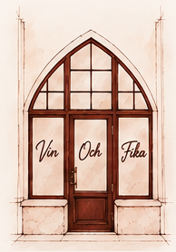

På Petersgatan
Stig in från gatan
Tre ord i röd neon visar vägen. Öppna träporten och slå dig ner. Här dricker vi kaffe ur blommiga koppar, och på marmorbordet finns plats för en croissant, ett glas vin och ett samtal med en vän.

Evenemang
En kväll
kring vin
Vilket vin skulle du gärna ta ett glas till av? Den frågan brukar få fart på samtalet. Kom på vinprovning eller hör av dig om du vill samla ett eget sällskap.
Kommande kvällar
Besök oss
Petersgatan 16 A
Helsingfors
- Mån–tors
- 8.00–22.00
- Fre–lör
- 8.00–23.00
- Sön
- 9.00–20.00